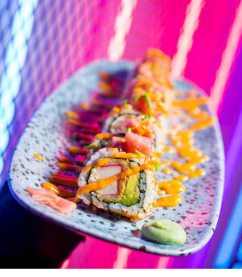

Neonwaves
El Sushi Con Estilo y Sabor Brillante!

Sobre Nosotros

Adéntrate en un viaje culinario donde la tradición japonesa se fusiona con la vibrante energía del
cyberpunk en Neonwave Sushi Bar.
Nuestro restaurante es un mundo neón donde podrás disfrutar
de una experiencia gastronómica única, rodeada de un ambiente electrizante y futurista.
Nuestros chefs combinan técnicas ancestrales con un toque innovador para crear platillos de sushi
que te sorprenderán y deleitarán.
Utilizamos solo los ingredientes más frescos y de la más alta calidad,
para que cada bocado sea una explosión de sabor.
En Neonwave Sushi Bar, no solo te servimos comida, te ofrecemos una experiencia.
Nuestro ambiente está diseñado para transportarte a un mundo neonpunk, donde podrás disfrutar de la compañía
de tus amigos o familiares mientras te sumerges en la música más actual.